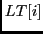
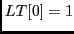
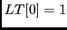
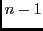
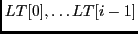
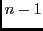
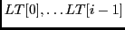
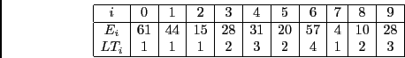

suivant: Question 2. 4 points.
monter: TP : Plus longue
précédent: TP : Plus longue
Calculez , la longueur
de la séquence croissante la plus longue qui se termine en  (et donc utilise ).
Clairement ; ensuite exprimez, pour l'indice
(et donc utilise ).
Clairement ; ensuite exprimez, pour l'indice  croissant de 1 à , en fonction de
;
avant de tenter de le programmer, faites le "à la main" sur l'exemple ci-dessus, obtenu avec
croissant de 1 à , en fonction de
;
avant de tenter de le programmer, faites le "à la main" sur l'exemple ci-dessus, obtenu avec exemple( 10).
Vous devez obtenir cette figure (à lire de gauche à droite) :

Dominique Michelucci
2012-12-06